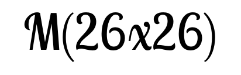

<!doctype html>
<meta charset="utf-8">

<link href="style.css" rel="stylesheet">

<script src="https://distill.pub/template.v1.js"></script>

<script type="text/front-matter">
  title: "YOLO - You only look <strike>once</strike> 10647 times"
  description: "An enlightening look behind the scenes of YOLO<dt-cite key="bochkovskiy2020yolov4"></dt-cite> state-of-the-art object detection approach and what the <i>once</i> actually means."
  authors:
  - Christian Limberg: http://uni-bielefeld.de
  - Andrew Melnik: http://uni-bielefeld.de
  - Augustin Harter: http://uni-bielefeld.de
  - Helge Ritter: http://uni-bielefeld.de
  affiliations:
  - Bielefeld University: http://uni-bielefeld.de
  - Bielefeld University: http://uni-bielefeld.de
  - Bielefeld University: http://uni-bielefeld.de
  - Bielefeld University: http://uni-bielefeld.de
</script>

<dt-article>
  <h1>YOLO - You only look <strike>once</strike> 10647 times</h1>
  <!---  (52*52 + 13*13 + 26*26) * 3 = 10647 --->
  <h2>An enlightening look behind the scenes of YOLO<dt-cite key="bochkovskiy2020yolov4"></dt-cite> state-of-the-art object detection approach and what the <i>once</i> actually means.</h2>
  <dt-byline></dt-byline>


<a id='fig1'></a> 
<div class="m-page">
	<object data="figs/yolo_arc.svg" width="100%"></object>
</div>


<div class="l-page">
<h2> Figure 1</h2>
A simplified schematic of the YOLO.v4 network architecture. <a href="./figs/yolo_arc.svg">Download figure</a>
</div>


<br><br><br><br><br>


<a id='fig2'></a> 
<div class="m-page size_select">
	</img>
	</img>
	</img>
</div>

<div class="m-page fig_select">
	</img>
	</img>
	</img>
	</img>
	</img>
	</img>
</div>

<div class="m-page">
	<canvas id="bbs" style="width:100%;"></canvas>
</div>


<div class="l-page">
<h2> Figure 2</h2>
With our interactive visualization, the full grid layers of the YOLO.v4 network can be depicted for several images. The YOLO architecture has 3 different pathways for recognizing objects of different sizes. The recognition heads are located in 2d-grids of different resolutions. Each grid element can detect underlying objects based of 3 possible anchor box shapes. Each anchor box refines estimates the x- and y-position, the width and the height, a confidence value and a probability vector of each class used for training. The bounding boxes are labeled with the predicted class, the certainty value and an index of the anchor box. Object proposals with a high certainty are colored green.
By the top button rows, the pathway and the input image to be visualized can be selected. By hovering over the figure, the respective grid cell and the detected bounding box of the most certain anchor box is visualized. 
</div>


<br><br><br><br><br>


<a id='fig3'></a> 
<div class="m-page size_select">
	</img>
	</img>
	</img>
</div>

<div class="m-page fig_select">
	</img>
	</img>
	</img>
	</img>
	</img>
	</img>
</div>

<div class="m-page">
<canvas id="shift" style="width:100%;"></canvas>
</div>

<div class="l-page">
<h2> Figure 3</h2>
By shifting the actual input image below the grid cells, it can be visualized how the confidences of the anchor boxes (green means high confidence) are shifted and neighboring cells get activated. 
By the top button rows, the pathway and the input image to be visualized can be selected. By hovering over the figure, the input image is shifted.</div>


<br><br><br><br><br>


<a id='fig4'></a> 
<div class="l-page">

<div class="canvas_grid">
	
<div></div> 
<div></div> 
<div style="text-align:center">X</div> 
<div style="text-align:center">Y</div> 
<div style="text-align:center">Width</div> 
<div style="text-align:center">Height</div> 
<div style="text-align:center">Confidence</div> 
<div style="text-align:center">Probability (for class person)</div>  

<div><canvas id="select_canvas" class="canv_in_grid"></canvas></div>
<div style='text-align: right;'>Layer 75</div>
<div><canvas id="canvas_75_x" class="canv_in_grid"></canvas></div>
<div><canvas id="canvas_75_y" class="canv_in_grid"></canvas></div>
<div><canvas id="canvas_75_w" class="canv_in_grid"></canvas></div>
<div><canvas id="canvas_75_h" class="canv_in_grid"></canvas></div>
<div><canvas id="canvas_75_c" class="canv_in_grid"></canvas></div>
<div><canvas id="canvas_75_p" class="canv_in_grid"></canvas></div>

<div></div>
<div style='text-align: right;'>Layer 103</div>
<div><canvas id="canvas_103_x" class="canv_in_grid"></canvas></div>
<div><canvas id="canvas_103_y" class="canv_in_grid"></canvas></div>
<div><canvas id="canvas_103_w" class="canv_in_grid"></canvas></div>
<div><canvas id="canvas_103_h" class="canv_in_grid"></canvas></div>
<div><canvas id="canvas_103_c" class="canv_in_grid"></canvas></div>
<div><canvas id="canvas_103_p" class="canv_in_grid"></canvas></div>

<div></div>
<div style='text-align: right;'>Layer 104</div>
<div><canvas id="canvas_104_x" class="canv_in_grid"></canvas></div>
<div><canvas id="canvas_104_y" class="canv_in_grid"></canvas></div>
<div><canvas id="canvas_104_w" class="canv_in_grid"></canvas></div>
<div><canvas id="canvas_104_h" class="canv_in_grid"></canvas></div>
<div><canvas id="canvas_104_c" class="canv_in_grid"></canvas></div>
<div><canvas id="canvas_104_p" class="canv_in_grid"></canvas></div>

<div></div>
<div style='text-align: right;'>Layer 105</div>
<div><canvas id="canvas_105_x" class="canv_in_grid"></canvas></div>
<div><canvas id="canvas_105_y" class="canv_in_grid"></canvas></div>
<div><canvas id="canvas_105_w" class="canv_in_grid"></canvas></div>
<div><canvas id="canvas_105_h" class="canv_in_grid"></canvas></div>
<div><canvas id="canvas_105_c" class="canv_in_grid"></canvas></div>
<div><canvas id="canvas_105_p" class="canv_in_grid"></canvas></div>


</div>
	
</div>


<div class="l-page">
<h2> Figure 4</h2>
Our adapted Detection Grad Cam visualizes the attention of a single output neuron. The left column represents the attention of the Height-neuron and the right column represents the attention of the Width-neuron of a selected grid cell of the large pathway (13x13 output pixels). These plots represent the mean over 15 images where a person is under the corresponding grid cell.
By hovering over the left area, a spatial grid cell can be selected. The attentions for the 4 neurons (W- and H-neurons for 2 convolutional layers) of the selected grid cell are visualized.

</div>


<br><br><br><br><br>


</dt-article>

<dt-appendix>
</dt-appendix>

<script type="text/bibliography">


@article{bochkovskiy2020yolov4,
  title={Yolov4: Optimal speed and accuracy of object detection},
  author={Bochkovskiy, Alexey and Wang, Chien-Yao and Liao, Hong-Yuan Mark},
  journal={arXiv preprint arXiv:2004.10934},
  year={2020}
}

</script>


<script src="js/jquery-3.4.1.min.js"></script>
<script src="js/grid_visu.js"></script>

